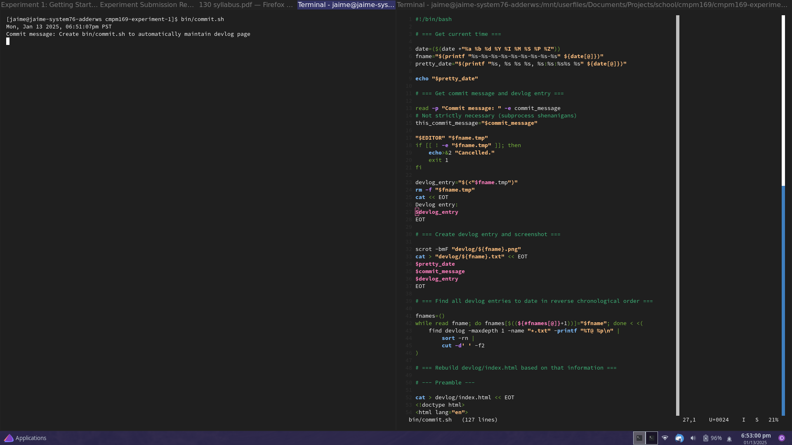

-
Mon, Jan 13 2025, 09:53:58pm PST—Update README.md

I replaced the provided README.md with an accurate description of this repository. The original was for the template itself, not for repositories created from it.
-
Mon, Jan 13 2025, 09:48:18pm PST—Change HTML to use new confidence-list class. I had done this before, but forgotten to include index.html in the commit.

What it says in the title.
-
Mon, Jan 13 2025, 09:41:12pm PST—Add background image from a digital painting I did awhile back.

I made this digital painting specifically as a website banner, actually, but for a different personal website. I'm reusing it here because I need some spice and I really like it.
-
Mon, Jan 13 2025, 09:22:08pm PST—Style confidence lists in gradient text color starting at green at the top and transitioning to red at the bottom.
I used a few lists in my homepage that were ordered in descending order of confidence. As a visual cue for this, I decided to use CSS to color them with a gradient.
-
Mon, Jan 13 2025, 09:08:27pm PST—Overhaul sitewide stylesheet.

I've started on a basic new sitewide style. This is taking HTML inspired by the HTML we were given, and adding novel CSS to it, so I'd argue it falls under *integration:* combining existing code with a new technique. (The new technique is my stylesheet.)
The style is very basic right now. I'll work on making it a little bit more fun.
-
Mon, Jan 13 2025, 08:40:05pm PST—Upload logo.svg. Delete toggle-local-server.sh from original location in repo root.

Just some loose changes I missed earlier.
-
Mon, Jan 13 2025, 08:27:53pm PST—Overhaul index.html to personal tastes

I overhauled the website homepage to suit my personal tastes in webdev. I consulted the original the whole time, so I'd say this counts as imitation.
I don't like including JavaScript needlessly in a page, so I removed the script tag for now. I'm sure I can do something interesting with it later, and I'm sure that was the point of it being in there in the first place, so it will probably be back.
I filled out some of my personal details.
I made significant changes to the semantic structure of the page. Where possible, I prefer to make semantic use of elements rather than semantic use of id and class names. I realize it's not a popular opinion these days, and there's probably a good reason for that that I don't fully understand, but, well, as long as I don't understand it...
I decided to use only one stylesheet for the homepage. Rather than putting style rules that should *only* apply to the homepage in a separate stylesheet, I'll try as much as possible to avoid *having* style rules that should only apply to the homepage, and override exceptions in page-specific stylesheets for other pages. On further consideration, this is probably an inferior way of doing things than was setup to begin with, but I don't know, it's just more agreeable to my sensibilities. I just feel like the homepage stylesheet and the sitewide stylesheet should be one and the same.
I moved the nav into the header instead of having it off to the side. Personal preference.
To keep my devlog entries fairly discrete, I'm not yet overhauling the stylesheet. I'll do that next.
-
Mon, Jan 13 2025, 06:54:58pm PST—In bin/commit.sh, try to ensure whole devlog entry is printed back before taking a screenshot

In my first bin/commit.sh-generated commit, the screenshot only included as much of my devlog entry as could fit on one line of my terminal. I assume this is because scrot started before cat had technically finished, so I added a 0.1-second delay to try to address this.
-
Mon, Jan 13 2025, 06:51:07pm PST—Create bin/commit.sh to automatically maintain devlog page
I wrote a script to maintain a devlog page for me. By this means I can easily fulfill the technical requirements of the imitate/innovate/integrate assignment instructions, namely to document my changes and include screenshots, so I can hopefully put a lot more of my focus toward *making* the changes.
{kind=link}
{kind=link}